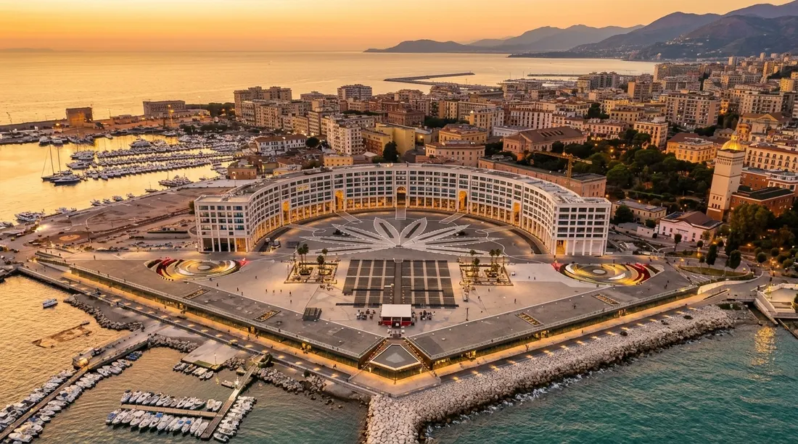

Costiera Amalfitana
Dal porto di Salerno partono i traghetti per Amalfi e Positano: niente traffico, solo mare.
Pontecagnano · Salerno
Tra la Costiera Amalfitana e i Templi di Paestum,
a pochi minuti dall'aeroporto.
Scorri per partire
✈ Si atterra qui
10 minuti da casa · 6 km
Costiera Amalfitana
20 minuti al porto di Salerno · poi il traghetto
Patrimonio UNESCO
40 minuti da casa · 35 km
La posizione
Da Pontecagnano raggiungi in poco tempo tutto quello che hai sognato della Campania. E se arrivi in aereo, la vacanza comincia dieci minuti dopo l'atterraggio.
Tempi indicativi in auto, senza traffico.

La casa
Un appartamento luminoso e curato nel Parco Vittoria: soggiorno che si apre su una grande terrazza con dondolo e tavolo da pranzo, cucina attrezzata, due camere accoglienti e due bagni.
Le foto
Cosa vedere
Dal porto di Salerno partono i traghetti per Amalfi e Positano: niente traffico, solo mare.

I templi greci meglio conservati d'Italia, la mozzarella di bufala e le spiagge del Cilento.

Il lungomare, il centro storico e la movida, a venti minuti da casa.
Scrivici le date: ti rispondiamo con disponibilità e prezzo.